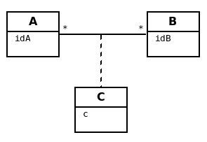

Présentation

Ce support vise à présenter une aide méthodologique en ce sens, en vue de constituer un modèle de domaine.
Notions de DF et DMR
Introduction
En phase d’analyse, la collecte des données et leurs relations est au centre des préoccupations.
Après avoir indentifier des concepts métier clés, ces derniers seront regroupés (en référence au concept d'encapsulation et de classe) et placés en relation de dépendances (association, heritage).
Notion de Dépendance Fonctionnelle (DF) et Dépendance Multivaluée (DM)
Dépendance Fonctionnelle
soit A et B, deux données (concept métier) du système.
Def : Lorsqu’une valeur de A (une donnée) permet, au plus, de connaître une et une seule valeur de B, on dit que B dépend fonctionnellement de A.
| Concept | Représentation | Exemple |
|---|---|---|
Dépendance Fonctionnelle |
A est la source et B la destination (ou but) |
La connaissance de l’id d’un client me permet de connaître son nom. |
Caractère d’unicité
Les sources des dépendances sont, par nature, des identifiants, leur valeur est unique au sein du système.
Par exemple, idClient → nomClient, idClient est la clé qui permet l’accès à l’information nomClient. Pour la cohérence du sytème,
cette clé doit être unique (absence de doublons)
|
| La source d’une dépendance engendrera, dans la majorité des cas, une entité dénotant un concept métier. (voir plus bas : règles-de-passage-du-gd-au-modèle-du-domaine-uml) |
Propriétés des DF : Axiomes d’Armstrong
Les axiomes d’Armstrong (du nom de William Ward Armstrong, informaticien et mathématicien Canadien qui a défini les axiomes du système relationnel en 1974)
| Propriété | Définition | Remarque |
|---|---|---|
Réflexivité |
A → A (A propriété quelconque) |
Tautologie |
Augmentation |
si A → B alors A,C → B ∀C |
La source peut être augmentée sans nuire à la DF initiale. Une erreur d’analyse courante. |
Transitivité |
si A → B et B → C alors A → C |
Principe de base du marchandage de données personnelles ! |
Dont on peut déduire les propriétés suivantes :
| Propriété | Définition | Exemple |
|---|---|---|
Pseudo-transitivité |
si A → B et B,C → D alors A,C → D |
Les voleurs de données s’y intéressent fortement… |
Union |
si A → B et A → C alors A → B,C |
Permet d’appliquer l'encapsulation |
Décomposition |
si A → B,C alors A → B et A → C |
Pour revenir à l’évidence |
Qualités remarquables des DF
En phase d’analyse, on ne retient que les DF ayant les qualités élémentaire et directe.
Intéressons-nous à ces qualités.
Qualité élémentaire
Def : Une DF est élémentaire si sa source est minimum
La DF : A → B est élémentaire s’il n’existe pas une (ou un ensemble de) propriété(s) C,
tel que C est sous-ensemble de A, C différent de A, et C → B.
Contre-Exemple : Il aurait été faux de conserver la DF :
(id_commande, id_fournisseur) --- > date_commande
si la DF id_commande --- > date_commande suffit.
Qualité directe
Def : Une DF est directe si elle n’est pas transitive.
Contre exemple (DF transitive)
transitivité
A ----------> C si une conséquence des DF : A → B et B → CExemple : idCmd --- > idFournisseur, nomFournisseur,
qui se lit : "la connaisance du numéro de commande me permet de connaître l’identifiant du fourniseur et son nom" (ce qui est logique, vous en conviendrez)
Seulement voilà, la relation idCmd --- > nomFournisseur est une DF obtenue par transitivité s’il existe la DF (et c’est fort probable) : idFournisseur --- > nomFournisseur
Dans ce cas il faut transformer la DF transitive en deux DF directes :
idCmd → idFournisseur et idFournisseur → nomFournisseur
Dépendance Multivaluée
Il a des cas où la connaissance d’une propriété nous permet de connaître plus d’une autres propriétés du sytème.
Les axiomes d’Armstrong sont considérées agir sur les DM.
Def : Lorsqu’une valeur de A permet de connaître plus d’une valeur de B, on dit que B est en dépendance multivaluée avec A, et on le note : A →→ B
| Concept | Représentation | Exemple |
|---|---|---|
Dépendance Multivaluée |
A →→ B ou A -->>B |
idClient →→ idCommande La connaissance de l’id d’un client me permet de connaître l’ensemble de ses identifiants de commande. |
Qualités de DM
En phase d’analyse, nous ne retiendrons que les DM élémentaire, directe et réciproque.
Qualité directe
Def : Une DM est directe si aucune décomposition ne peut être appliquée (absence de transitivité)
Réciproques
Def : Lorsque A -->> B et B -->> A, on dit que A et B sont en DM Réciproques (DMR).
| Concept | Représentation | Exemple |
|---|---|---|
Dépendances Multivaluées Réciproques (DMR) |
A-->-->o<--<--B ou A-->>o<<--B |
idPays →→o←← idLangueParlee * La connaissance de l’id d’un pays me permet de connaître l’ensemble des langues parlées dans ce pays * La connaissance de l’id d’une langue parlée me permet de connaître l’ensemble des pays où la langue est parlée |
Conduite de l’analyse
Ce chapitre introduit 2 principes à suivre lorsqu’on analyse des données en vue de modéliser le domaine métier.
Les deux règles sont des outils précieux en vue d’établir une base de données cohérentes et sans doublons.
Rappel : Ne sont considérées ici que les dépendances directes et élémentaires.
Principe 1
Lorsque, dans un contexte donné, A et B sont en relation de type A → B et B ->> A, seule la DF (A → B) est retenue. (prévisage d’une relation type many-to-one).
Principe 2
Toute source multi-attributs d’une DF (DF à partie gauche composée, par exemple (A,B,C) → D,E ) se doit d’être une DMR élémentaire et directe entre ses membres (prévisage d’une relation type many-to-many).
En appliquant la réflexivité, nous pouvons exprimer cette règle ainsi :
(A, B) -> (A, B) <=> A -->>o<<-- B <=> (A,B)
| pour les source à n attributs, il faut vérifier les qualités directes et élémentaires. |
(A, B, C) <=> A -->>o<<-- B , A -->>o<<-- C, B -->>o<<-- C et vérifier l'absence d'une DF cachée comme : (B, C) -> A par exemple (en application du principe 1)
Représentation graphiques des dépendances
Les dépendances, dans leur ensemble, peuvent être représentées par
-
un Graphe de Dépendances (directes et élémentaires) - orienté attribut/donnée
-
un Diagramme de classes UML (orienté entité), où ne figurent que les relations directes et élémentaires. Dans ce contexte une classe est une Entité et les transitivités déduites sont rarement signalées – UML les considère comme des attributs dérivés – avec une notation spéciale
Soit les DF suivantes :
* numClient -> Pays (pays de naissance) * numClient -> Continent (continent préféré) * idPays -> libPays * idPays -> idContinent * idContinent -> libContinent
1: GD (graphe de dépendances)
Les dépendances sont réparties sur le plan, de façon à favoriser le plus possible leur compréhension.
Exemple de Graphe de Dépendances (focalisation sur les attributs)
2: Diagramme de classes UML
Exemple de Diagramme de Classes des Entités du Domaine (focalisation sur les classes - réalisé avec dia)

| le stéréotype <<ID>> n’est pas obligatoire, ni <<entity>> , si l’auteur du diagramme spécifie clairement qu’il s’agit de modèle conceptuel du domaine. |
Règles de passage du GD au Modèle du Domaine UML
R1 : A une source d’un DF (à gauche de la flèche) correspond une entité qui admet un identifiant.
| GD | Modèle du domaine |
|---|---|
A-->B |
R2 : Une dépendance multivaluée réciproque (DMR) engendre une association many-to-many.
| GD | Modèle du domaine |
|---|---|
A-->>o<<--B |
|

R3 : Une dépendance multivaluée réciproque (DMR) ciblant un attribut engendre une classe association portant l’attribut.
| GD | Modèle du domaine |
|---|---|
|
 |
R4 : Un but (une destination) commun à plusieurs DF (à droite de plusieurs flèches) est considéré comme une source (voir R1)
| GD | Modèle du domaine |
|---|---|
|
|


Exercices
Ex 2
D’après les DF suivantes, construisez un GD et MCD
(a, b) -> c (c, e) -> d d -> f d -> g a -> h
Ex 3
Une communauté de commune disposant de nombreux matériels agricole et travaux publics, souhaite pouvoir louer ce matériel à ses administrés. Après une rencontre avec le responsable technique, votre collègue vous soumet son analyse sur la base d’un ensemble d’attributs en dépendances :
NumEmprunteur -> NomEmprunteur
NumEmprunteur -> AdrEmprunteur
NumEmprunteur -> TelEmprunteur
(NumEnprunteur, idMateriel) -> DateEmprunt
(NumEnprunteur, idMateriel) -> DateRetour
idMateriel -> idCategorie
idMateriel -> idMarque
idMateriel -> idCategoriePrix
idCategorie -> LibCategorie
idMateriel -> AnneeSortie
idCategoriePrix -> LibCategoriePrix
idMateriel -> PrixLocation
idMateriel -> idEtat
idMarque -> NomMarque
idCategoriePrix -> PrixLocation
idEtat -> LibEtat # {'EXCELLENT', 'TRES BON', 'BON', 'MOYEN', 'EN REPARATION', 'HS'}
-
Établir le GD ainsi qu’un MCD correspondant.
-
L’analyse de votre collègue a un défaut. Tachez de le détecter et de corriger son analyse.